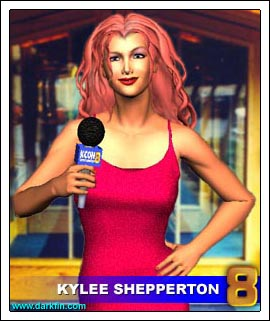
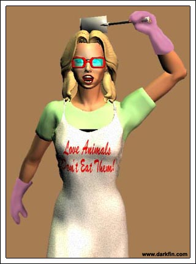

Spinning, Weaving, Tangling
Karl Sr. (Into the phone) Dammit, KJ, where are you? - this is important, can't you get out of court for once? - no, I don't know where Erika is... it sure would be nice if at least ONE of my children gave a damn about our family's interests!
Doug Relax, old man, Griff will take care of this
Karl Sr. That's what I'm afraid of
Doug At least he's here - that's more than I can say for your two

Griffin (Speaking into the mike) Ladies and gentlemen, I want to thank you all for coming - I will issue a brief statement and then take a few of your questions... last Thursday night, two gruesome discoveries were made aboard "The Maleeva" a Meer-A-Mar Industries tanker based out of the Black Sea - one, it was carrying an illegal arms shipment and two, the crew was viciously attacked by an unknown assailant - we are currently cooperating with the United States Coast Guard, as well as several local and international law enforcement agencies to remedy this situation...
Doug (Watching the women in the room watch Griffin) The ladies all used to look at me like that
Karl Sr. (Rolling his eyes) Yes, I remember the academy very well
Doug It wasn't just the academy... what I can't figure out is when exactly did it stop?
Karl Sr. Maybe when you got married... again - and your wife, who is comparable in age to your daughter, gave birth
Doug Funny, I don't feel any different - I see my son up there right now, he has my looks, my charm, he IS me... except a few decades younger
Karl Sr. We're all getting older, Douglas, learn to accept it
Doug I don't want to, I still feel 30!
Karl Sr. Weren't you telling me earlier about how you get leg cramps whenever you ride your Harley?
Doug (Grimacing) I still feel 30 mentally
Karl Sr. You should be happy with what you have accomplished with your life, most men would kill for a quarter of what you have
Doug It doesn't seem like enough
Griffin In conclusion, Meer-A-Mar had no prior knowledge of this cargo - an internal investigation into this matter has been launched and we will promptly deal with anyone involved - the authorities and the media will be kept apprised of our findings, thank you...
Doug (To Karl Sr.) Ursula wants me to have liposuction
Karl Sr. Martel, we are in the middle of a crisis here!
Doug This is not a crisis - a crisis would be a shipment full of mutilated babies
Karl Sr. (Shaking his head) I can't believe you just said that
Doug It's the truth - this is an incident at best and tomorrow it will be a forgotten memory - it's the glory of the fast-paced society we live in now
Karl Sr. We have four dead men and several others severely injured
Doug Gun-running Bulgarians, who cares?
Karl Sr. Their families?
Doug Griffin has already made arrangements for a generous settlement - even though we are NOT at fault
Karl Sr. He seems to have everything under control
Doug He better!
Griffin (Looking out over the reporters) I'll take a few questions now... Ms. Shepperton
Doug (Aside to Karl Sr.) You know, Erika better watch out
Karl Sr. What do you mean?
Doug I mean that Kylee Shepperton is real competition for Griffin's affections
Karl Sr. Ah
Doug I absolutely cannot understand why Erika keeps him at bay?
Karl Sr. (To himself) Because my daughter is smart

Kylee Mr. Martel, there are allegations that this was the work of a vigilante - is this true?
Griffin I will defer to the proper authorities on that subject... next question
Doug (Whispering) There's talk among the crew that it was that she-creature again
Karl Sr. Oh, for heaven's sake, you don't believe that garbage, do you?
Doug I don't know
Karl Sr. C'mon, Doug - next thing you'll be telling me is that the Loch Ness monster just bought a summer home off of Beacon Point and that Big Foot is applying for a job on the loading docks!
Doug All I'm saying, Karl, is that I don't rule it out - I've seen too much in my life to ever rule anything out
Karl Sr. You've been watching too much of your wife's crazy TV show
Doug (Glancing at his watch and taking off) Speaking of which, I promised to meet her for lunch
Griffin Where's my father?
Karl Sr. He took off for lunch
Griffin (Looking down) Oh
Karl Sr. (Patting the man on the back) You did a fine job, Griffin
Griffin Thank you - tell me, have you heard from Erika today?
Karl Sr. No, I haven't seen her since Thursday - KJ said she went for a sail
Griffin (Searching the room) Where is Kage?
Karl Sr. (Clenching his jaw) Not here
Griffin May I buy you some coffee, Ms. Shepperton?
Kylee (Smiling) Don't you have a cappuccino machine in your office?
Griffin Let's find out
Morrigan (Still watching the TV) Hello, Gracie - yes, Gracie - I saw the whole thing, Gracie - no, Gracie, this is my day off - I just got in from Dallas two hours ago - alright, Gracie - yes, she is a slut - I'll see you tomorrow - goodbye, Gracie!
Morrigan (To Tallulah) That was Crazy Gracie - you'll meet her soon enough - that guy in the lower right corner of the screen picking his nose during the press conference was Zach - they're both very weird but very nice - the KCON reporter covering it, that was Kylee, yes, THE Kylee... and I don't really think she's a slut, I think she thoroughly enjoys what she does - Gracie is insanely jealous of her... I suppose I can understand her POV - Zach is just pissed he can't get her into bed, thus their communal hatred for all things Shepperton
Morrigan Here are Chip n' Dale, aka "Captain Crunch" and the "Tuna Taster" - whenever I see them in their uniforms, I want to break out into Village People songs, I'm not sure why - they're doing their damnedest to keep me in the dark... ha... about Darkfin, but they can't do it much longer - you can strain freaking ziti with their account of what happened aboard the Maleeva - and I would've pressed them on it too, but I had to rescue YOU... yes, I did, I had to come get my Lil Lu from evil Auntie before she got fed up and flushed you!
Morrigan (Dancing around and singing)
Talula
Talula
I don't want to lose it
It must be worth losing
If it is worth something
Talula
Talula
She's brand new now to you
Wrapped in your papoose
Your little Fig Newton
Morrigan I hope you like your new home... I hope I like my new home - it's strange, part of me didn't want to come back here yet there was a bigger part of me that did
And Jamaica
Do you know, do you know what I have done
Mary M weaving on said
What you want is in the blood Senators
Said what you want is in the blood Senators, yes
I got Big Bird on the fishing line
With a bit of a shout a bit of a shout
A bit of an angry snout
He's my favorite hooker of the whole bunch

Morrigan (Halting) ARGH
Morrigan Um, thanks Amy, I've already had lunch
Amethyst NO WAY, MORRI
Morrigan How about dinner?
Amethyst NO WAY IS THAT THING STAYING HERE
Morrigan (Trying to look innocent) What thing?
Amethyst (Pushing past her) THAT THING WITH EIGHT HAIRY LEGS
Morrigan It's just a little spider
Amethyst LITTLE? - IF YOU CONSIDER THAT LITTLE, I WOULD HATE TO BE YOUR BOYFRIEND
Morrigan (Keeping between the woman and the tarantula) You said I could have pets
Amethyst PETS as in CATS and DOGS, maybe a ferret, but not that THING
Morrigan C'mon, Amy, you of all people should be cool with this
Amethyst (Spying the spider and striking a karate pose) What does that supposed to mean?
Morrigan You can't kill, you're a Buddhist
Amethyst But I can accidentally maim
Morrigan Look, I'll throw in an extra $10.00 a month on the rent
Amethyst I cannot be bought
Morrigan $15.00?
Amethyst Well...
Morrigan And I think you should know that Tallulah is a Gemini... with Aries rising
Amethyst (Relaxing) OH MY GODS, WHY DIDN'T YOU SAY SO BEFORE?
Amethyst Of course she can stay - you know, I can see she has the demeanor of an Aries rising
Morrigan Do I still have to pay the extra $10.00 a month?
Amethyst $15.00 and I can't be held responsible if Roshumba decides she's snack material - sorry to interrupt your shower by the way
Morrigan (Baffled) Do I appear wet and unclothed to you?
Amethyst (Cocking her head) I was wondering how you could properly bathe like that
Morrigan Amy... TRY, TRY to make sense
Amethyst I heard you singing
Morrigan And?
Amethyst You mean you weren't singing in the shower?
Morrigan (Motioning to her clothes) Nnnnno
Amethyst Euterpe lives!
Morrigan What?
Amethyst You have a musical gift, why do you shun it?
Tim Um, excuse me... Morrigan?
Morrigan Oh, hello, Tim - thanks for coming over
Tim I have the... ahem... information you requested
Amethyst (Taking off her goggles and looking at Tim) Do you know Leon Serna?
Tim Yes, we used to date
Amethyst I used to cut his hair
Amethyst OK, time for me to return to my universe - Morri, from now on, please be up front with me - I don't want to find a pet alligator in my jacuzzi!
Morrigan (Watching the woman leave) Damn, there goes your birthday surprise!
Tim (Looking uncomfortable as he hands over some documents) Here are your results
Morrigan I see a lot of charts and graphs, charts and graphs give me a headache - what's the bottom line?
Tim Smelt innards
Morrigan (Throwing the papers across the room) LIAR
Tim I am NOT lying - instead of tossing the results in the air like an insolent child and accusing me of not telling the truth, try LISTENING to what I have to say - isn't that what journalists are trained to do?
Morrigan Then say what you have to say, Mr. Hajanian
Tim Smelt innards are just the beginning - these results show a DNA cocktail of multiple varieties of marine life - we're talking rajiformes, lamniformes, anguilliforms, cephalopods...
Morrigan Hold on, hold on, hold on - I don't know what you're talking about!
Morrigan See, in my biology class, I was busy doing the jocks' English homework so they wouldn't beat up the science geeks - in return, the science geeks did my biology homework - so, you're going to have to explain to me what you just said... in English
Tim I'm sorry, I left my ichthyology coloring books back at the office
Morrigan (Grabbing a white lace doily off of the table and waving it) TRUCE - let's end the verbal exchanges, I know we both have better things to do with our time
Tim I agree - simply stated, we have a mixture of DNA from rays, sharks, eels, octopuses, and several kinds of fish
Morrigan I thought it was octopi?
Tim (Blinking) It can be either
Morrigan Oh
Tim You don't really seem all that stunned by this news - tell me, is it because of your scientific stupidity or do you know something more about this?
Morrigan Is there human DNA in there as well?
Tim Yes, she is most definitely human
Morrigan She...
Tim Another thing - all humans have certain metals in their blood... iron, cobalt, manganese - although this is not my area of expertise, there is a metal in this sample that I cannot even begin to comprehend
Morrigan This keeps getting better and better
Tim I can't really explain anything else beyond this... and I am not so sure I want to - if that will be all then?
Morrigan Thank you, Tim
Tim (Leaving) Please keep your part of the agreement about George
Morrigan And please keep everything we discussed here today to yourself
Morrigan (Rubbing her head) Research time
Erika (Rubbing her head) There has to be some real answers somewhere - I've had enough of this folklore and hocus pocus junk
Shelby Sometimes folklore and hocus pocus junk can be better than a Venn Diagram
Erika (Jumping out of her skin) JESUS, SHEL - don't creep up on me like that - what are you doing here?
Shelby Picking up some books for Calvin - what are YOU doing in this section?
Erika Looking some stuff up for Penny, she's not doing well in her history class
Shelby What class is she doing well in? - listen, I have to go - promise me that you will get your face out of ALL books tonight and do something fun
Erika Did Griffin, Sandy or my family pay you to say that?
Shelby (Squeezing Erika's shoulder) No one had to pay me to say that
Erika Thanks Shel, I'll see you tomorrow
Shelby I'll help you with the Gumberson paper then
Erika (Under her breath) I wish you could help me with something more important...
Morrigan (Flipping through the pages of a technical manual) Maybe I should've started in the kids' section first
Morrigan (Frozen in fear for a second and then becoming pissed) Please don't do that
Erika Need some help?
Morrigan No, I'm fine, thank you
Erika (Glancing at the textbook) The mitochondrial protein sequences of Isurus oxyrinchus... is KCON trying to drive down ratings again?
Morrigan It's not for KCON
Erika Oh?
Morrigan (Glancing at Erika's books) The subterranean geography of the Kiyomis - I'm going hiking there tomorrow with your brother, would you like me to bring back some brochures from the ranger?
Erika That's an interesting place to hike - did KJ recommend it?
Morrigan Actually, it was Joenne Mirabello
Erika Hmm, she doesn't strike me as the hiking type
Morrigan And you don't strike me as the scientific type, so much for judging a book by its cover - speaking of which, I need to return to my research... please don't let me keep you from yours
Erika (Nodding at her textbook) If you're curious to learn more about this subject, don't be afraid to ask
Morrigan (Feeling the hairs on the back of her neck prickle) I shall keep that in mind